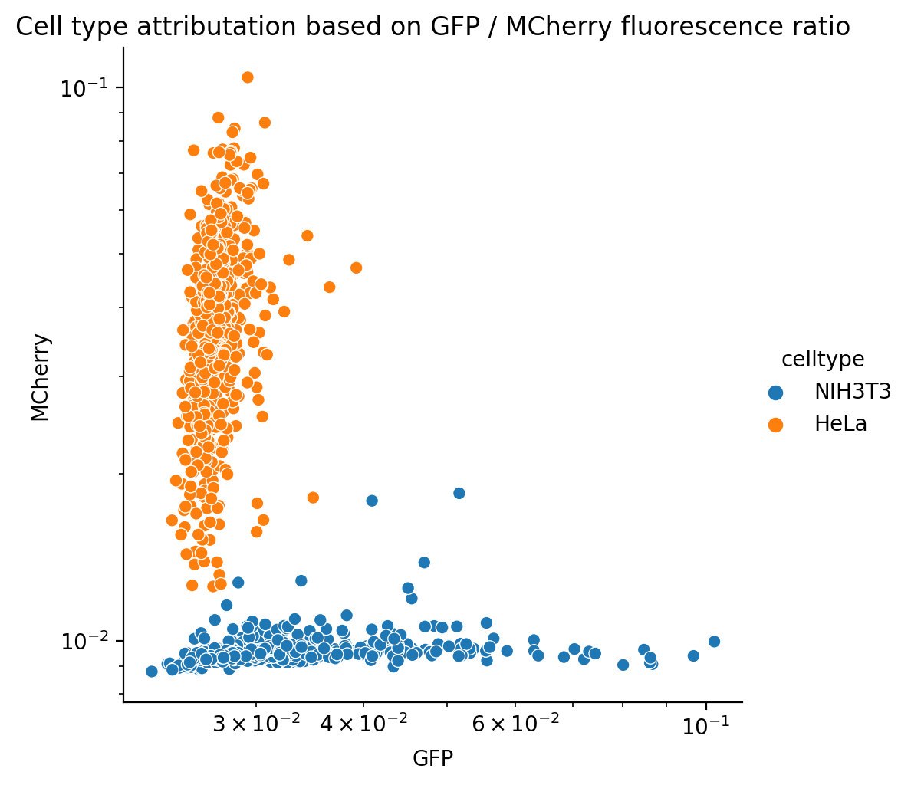

Mx_Coculture: Data preparation¶
The Co-Culture-Dataset of HeLa and NIH3T3 cells was not available in the typical structure of SpaceM-processed data. Thus, the data is converted to this format to enable the use of the same analysis pipeline.
[1]:
import os
import platform
import scanpy as sc
import pandas as pd
import numpy as np
import anndata as ad
import statistics as st
import multiprocessing
from joblib import Parallel, delayed
from tqdm import tqdm
import statsmodels.formula.api as smf
import seaborn as sns
import re
from importlib import reload
import json
import sys
sys.path.append('/home/mklein/spacem')
sys.path.append('/home/mklein/FDA_project')
from src.correction import (add_normalization_factors,
correct_quantile_inplace,
deconvolution_spacem,
get_overlap_data,
add_overlap_matrix_spacem
)
from src import const
from SpaceM.lib.modules import (
overlap_analysis,
single_cell_analysis_normalization
)
%matplotlib inline
%config InlineBackend.figure_formats = ['retina']
[2]:
# Parameters
source_path = "/home/mklein/Raw Data/Coculture"
target_path = "/home/mklein/FDA_project/data/Mx_Co_Cultured"
condition_name = "condition"
well_name = "rowcol"
deconv_default_min_overlap = 0.3
analysis_path = "/home/mklein/FDA_project/analysis/Mx_Coculture"
notebooks = [
"pipeline_01_correction.ipynb",
"pipeline_02_processing.ipynb",
"pipeline_03_evaluation.ipynb",
]
project = "Mx_Coculture"
[3]:
dataset_co_cult = np.load(os.path.join(target_path, 'marks_flitered_fluo.npy'), allow_pickle = True)
dict_headers = ["norm_MM",
"cell_marks",
"nucl_fluo",
"cell_fluo",
"marks_fluo",
"marks_cell_overlap",
"mark_area",
"overlap_indices",
"marks_fluo_overlap",
"cell_area",
"marks_cell_overlap_indexes",
"marks_cellLabels",
"marks_samplingArea",
"pmi",
"overLaps"]
cell_area = dataset_co_cult[9]
# reference, which cells are covered by which marks
cell_marks = dataset_co_cult[1]
# size of every mark
mark_area = dataset_co_cult[6]
# reference of overlap area between cells and marks
marks_cell_overlap = dataset_co_cult[5]
[4]:
mark_regions = pd.DataFrame({'am_id': mark_area.keys(), 'area': mark_area.values()}, index=mark_area.keys()).set_index('am_id')
mark_regions
[4]:
| area | |
|---|---|
| am_id | |
| 0 | 571 |
| 1 | 683 |
| 2 | 732 |
| 3 | 1053 |
| 4 | 1142 |
| ... | ... |
| 2495 | 606 |
| 2496 | 598 |
| 2497 | 607 |
| 2498 | 631 |
| 2499 | 631 |
2500 rows × 1 columns
[5]:
overlap_regions_list = []
for k, v in cell_marks.items():
if len(v) > 0:
for i, am in enumerate(v):
dic = {'cell_id': int(k), 'am_id': int(am), 'area': float(marks_cell_overlap[str(k)][i])}
overlap_regions_list.append(dic)
overlap_regions = pd.DataFrame(overlap_regions_list)
overlap_regions['overlap_id'] = overlap_regions.index + 1
overlap_regions = overlap_regions.set_index('overlap_id')
overlap_regions
[5]:
| cell_id | am_id | area | |
|---|---|---|---|
| overlap_id | |||
| 1 | 11 | 150 | 103.0 |
| 2 | 13 | 100 | 481.0 |
| 3 | 13 | 150 | 475.0 |
| 4 | 14 | 300 | 49.0 |
| 5 | 15 | 100 | 21.0 |
| ... | ... | ... | ... |
| 2433 | 1503 | 2399 | 126.0 |
| 2434 | 1510 | 2499 | 122.0 |
| 2435 | 1512 | 2449 | 58.0 |
| 2436 | 1512 | 2499 | 457.0 |
| 2437 | 1528 | 2499 | 52.0 |
2437 rows × 3 columns
[6]:
cell_regions_list = []
for k, v in cell_area.items():
if len(v) == 0:
area = 0.0
else:
area = float(v[0])
cell_regions_list.append({'cell_id': int(k), 'area': area})
cell_regions = pd.DataFrame(cell_regions_list).set_index('cell_id')
cell_regions
[6]:
| area | |
|---|---|
| cell_id | |
| 1 | 0.0 |
| 2 | 0.0 |
| 3 | 0.0 |
| 4 | 0.0 |
| 5 | 0.0 |
| ... | ... |
| 1570 | 0.0 |
| 1571 | 0.0 |
| 1572 | 0.0 |
| 1573 | 0.0 |
| 1574 | 0.0 |
1572 rows × 1 columns
[7]:
ion_intensities = pd.read_csv(os.path.join(target_path, 'sm_annotation_detections.csv'))
ion_intensities = ion_intensities.drop(['Num', 'X', 'Y', 'Z', 'R'], axis=1)
# ion_intensities = ion_intensities[['C16H30O2', "C25H44NO7P", "C45H78NO8P"]]
# ion_intensities = ion_intensities.iloc[selected_pixels]
ion_intensities.index = [str(i) for i in ion_intensities.index]
ion_intensities
[7]:
| C10H10N2O3S | C10H10N2O4S | C12H13N3O4S | C12H20N3O6S | C13H16N2O5 | C13H26O2 | C14H20N2O3S | C14H20N2O4S | C14H20N2O6S | C14H21N3O3S | ... | C45H78NO8P | C45H80NO8P | C45H82NO7P | C45H82NO8P | C46H77O10P | C46H81NO10P | C50H84NO10P | C6H11O8P | C6H13O9P | C9H19O11P | |
|---|---|---|---|---|---|---|---|---|---|---|---|---|---|---|---|---|---|---|---|---|---|
| 0 | 11732.452 | 996.42834 | 0.000000 | 96.63648 | 251.41237 | 1035.7161 | 508.46760 | 776.2968 | 728.43120 | 1268.3046 | ... | 263.37576 | 252.51741 | 0.0 | 244.01695 | 0.00000 | 99.36901 | 0.0 | 2732.2040 | 1450.11540 | 128.282870 |
| 1 | 8926.941 | 644.85220 | 98.860180 | 94.53568 | 129.45300 | 1127.7477 | 660.01980 | 798.9810 | 499.13810 | 1126.1990 | ... | 269.30545 | 126.23382 | 0.0 | 491.70282 | 340.28522 | 75.63770 | 0.0 | 4471.3240 | 1770.75710 | 400.891660 |
| 2 | 16184.508 | 1443.74080 | 122.435680 | 459.26910 | 298.34604 | 874.1114 | 869.47440 | 1570.6218 | 1599.04420 | 1897.0496 | ... | 0.00000 | 0.00000 | 0.0 | 0.00000 | 0.00000 | 0.00000 | 0.0 | 970.5054 | 616.07654 | 78.222760 |
| 3 | 17386.785 | 1770.08830 | 0.000000 | 521.62244 | 392.64360 | 1581.3160 | 851.89560 | 1496.8848 | 1700.58310 | 2238.6267 | ... | 0.00000 | 0.00000 | 0.0 | 0.00000 | 0.00000 | 0.00000 | 0.0 | 1037.3005 | 702.37850 | 0.000000 |
| 4 | 17993.777 | 2441.13100 | 0.000000 | 424.59857 | 589.03710 | 1536.0576 | 1004.76526 | 1373.1233 | 1684.19860 | 2142.4817 | ... | 0.00000 | 0.00000 | 0.0 | 0.00000 | 0.00000 | 0.00000 | 0.0 | 1332.7043 | 940.42100 | 120.620830 |
| ... | ... | ... | ... | ... | ... | ... | ... | ... | ... | ... | ... | ... | ... | ... | ... | ... | ... | ... | ... | ... | ... |
| 2495 | 14193.198 | 1098.00960 | 377.735440 | 133.33331 | 0.00000 | 1268.6356 | 966.20984 | 1225.4326 | 1056.80550 | 2004.0934 | ... | 130.08005 | 229.90854 | 0.0 | 136.83795 | 0.00000 | 0.00000 | 0.0 | 4241.5864 | 1591.95830 | 317.245880 |
| 2496 | 17826.373 | 2204.89750 | 124.410450 | 604.37280 | 635.19990 | 1172.6652 | 2027.87210 | 2225.9185 | 2475.11870 | 3223.1426 | ... | 0.00000 | 0.00000 | 0.0 | 0.00000 | 0.00000 | 0.00000 | 0.0 | 2617.0530 | 1362.17570 | 85.987526 |
| 2497 | 20524.766 | 2208.07860 | 131.849640 | 535.55316 | 437.42600 | 1162.7046 | 1485.94580 | 1914.0786 | 1891.50900 | 3095.1462 | ... | 0.00000 | 0.00000 | 0.0 | 0.00000 | 0.00000 | 0.00000 | 0.0 | 3441.5498 | 2130.13530 | 101.250000 |
| 2498 | 13827.365 | 1398.90610 | 117.092980 | 228.95663 | 93.65218 | 922.5511 | 1030.80410 | 1423.4183 | 1002.28130 | 2138.9333 | ... | 184.42477 | 230.75467 | 0.0 | 108.41697 | 0.00000 | 368.53442 | 0.0 | 5551.5240 | 2327.51880 | 254.901870 |
| 2499 | 8309.413 | 777.50710 | 54.968914 | 0.00000 | 68.58983 | 1171.5669 | 582.49270 | 802.6624 | 265.93088 | 1357.9442 | ... | 184.74634 | 134.13509 | 0.0 | 403.94885 | 0.00000 | 200.95474 | 0.0 | 7431.5723 | 3101.31710 | 669.905700 |
2500 rows × 104 columns
[8]:
am_adata = ad.AnnData(X = ion_intensities.astype(np.float32))
[9]:
condition_metadata = pd.read_csv(os.path.join(target_path, 'MORPHnMOL.csv'))
condition_metadata.index = [const.CELL_PRE + str(i) for i in condition_metadata.ObjectNumber]
condition_metadata['GFP'] = condition_metadata.Intensity_MeanIntensity_GFP_quantif
condition_metadata['MCherry'] = condition_metadata.Intensity_MeanIntensity_mCherry_quantif
condition_metadata['fluorescence_ratio'] = np.log(condition_metadata.GFP / condition_metadata.MCherry)
#condition_metadata['celltype'] = 'HeLa' if condition_metadata.fluorescence_ratio < 0.8 else 'NIH3T3'
condition_metadata['celltype'] = np.where(condition_metadata.fluorescence_ratio < 0.8, 'HeLa', 'NIH3T3')
print(condition_metadata['celltype'].value_counts())
plot = sns.relplot(data=condition_metadata, x='GFP', y='MCherry', hue='celltype')
plot.set(xscale='log')
plot.set(yscale='log')
plot.set(title='Cell type attributation based on GFP / MCherry fluorescence ratio')
raw_adata = ad.AnnData(X=np.array(condition_metadata[am_adata.var.index.intersection(condition_metadata.columns)]),
obs=condition_metadata[['ObjectNumber', 'celltype', 'GFP', 'MCherry', 'fluorescence_ratio']],
var=am_adata.var.loc[am_adata.var.index.intersection(condition_metadata.columns)])
HeLa 715
NIH3T3 492
Name: celltype, dtype: int64
/tmp/ipykernel_12613/1084675981.py:17: FutureWarning: X.dtype being converted to np.float32 from float64. In the next version of anndata (0.9) conversion will not be automatic. Pass dtype explicitly to avoid this warning. Pass `AnnData(X, dtype=X.dtype, ...)` to get the future behavour.
raw_adata = ad.AnnData(X=np.array(condition_metadata[am_adata.var.index.intersection(condition_metadata.columns)]),

[10]:
am_adata = am_adata[:, am_adata.var.index.intersection(condition_metadata.columns)].copy()
[11]:
r_adata = pd.read_csv(os.path.join(target_path, 'cell_spatiomolecular_matrix.csv'))
r_adata['cell_id'] = r_adata['Unnamed: 0']
del r_adata['Unnamed: 0']
r_adata_df = r_adata.set_index('cell_id').replace(np.nan, 0)
[12]:
r_cell_adata = raw_adata.copy()
r_cell_adata.X = r_adata_df
r_cell_adata.to_df()
[12]:
| C16H30O2 | C18H34O2 | C18H36O2 | C19H37O6P | C19H39O7P | C20H32O2 | C21H39O6P | C21H41O6P | C21H41O7P | C21H43O7P | ... | C43H81O13P | C43H82NO8P | C44H78NO10P | C44H84NO6P | C45H78NO8P | C45H80NO8P | C45H82NO8P | C6H11O8P | C6H13O9P | C9H19O11P | |
|---|---|---|---|---|---|---|---|---|---|---|---|---|---|---|---|---|---|---|---|---|---|
| 11 | 265.808388 | 489.958201 | 870.396125 | 1267.842768 | 313.799574 | 560.955848 | 607.017633 | 878.772983 | 291.287607 | 113.102262 | ... | 0.000000 | 100.192221 | 0.000000 | 0.000000 | 0.000000 | 0.000000 | 0.000000 | 1625.245675 | 1010.626148 | 73.307538 |
| 13 | 296.615224 | 567.476478 | 1187.310355 | 1355.246832 | 373.244981 | 551.257650 | 567.003198 | 1462.077545 | 240.765737 | 321.228593 | ... | 0.000000 | 49.976624 | 0.000000 | 0.000000 | 0.000000 | 84.813429 | 0.000000 | 1463.618128 | 991.468041 | 36.566344 |
| 14 | 472.557640 | 836.537133 | 2210.934477 | 2427.729054 | 257.828303 | 0.000000 | 0.000000 | 3108.314441 | 0.000000 | 779.176780 | ... | 0.000000 | 0.000000 | 0.000000 | 0.000000 | 0.000000 | 0.000000 | 0.000000 | 4024.967368 | 2035.756582 | 254.250992 |
| 15 | 322.835132 | 654.436371 | 1521.285176 | 1512.616897 | 448.879038 | 537.425280 | 544.185423 | 2132.622108 | 211.747895 | 550.790330 | ... | 0.000000 | 0.000000 | 0.000000 | 0.000000 | 0.000000 | 160.379531 | 0.000000 | 1379.887073 | 992.933110 | 8.551342 |
| 16 | 0.000000 | 0.000000 | 0.000000 | 0.000000 | 0.000000 | 0.000000 | 0.000000 | 0.000000 | 0.000000 | 0.000000 | ... | 0.000000 | 0.000000 | 0.000000 | 0.000000 | 0.000000 | 0.000000 | 0.000000 | 0.000000 | 0.000000 | 0.000000 |
| ... | ... | ... | ... | ... | ... | ... | ... | ... | ... | ... | ... | ... | ... | ... | ... | ... | ... | ... | ... | ... | ... |
| 1500 | 421.900966 | 1068.250480 | 763.947180 | 2031.982123 | 399.628603 | 830.893443 | 1012.072008 | 1578.698154 | 579.364466 | 439.322314 | ... | 523.075555 | 24.874751 | 19.187106 | 106.604025 | 70.140030 | 126.567459 | 46.292104 | 3148.801630 | 2000.761016 | 171.809511 |
| 1503 | 390.522685 | 1117.410179 | 1240.571847 | 2729.371995 | 606.392872 | 788.879644 | 1120.805876 | 2097.998346 | 570.203581 | 677.082139 | ... | 521.735659 | 231.707224 | 0.000000 | 0.000000 | 22.741879 | 115.893733 | 0.000000 | 3769.482602 | 2024.170092 | 155.397445 |
| 1510 | 537.635250 | 2135.785600 | 1632.460300 | 2615.275000 | 542.671700 | 2053.239700 | 2234.056200 | 2418.620800 | 1060.872200 | 484.894320 | ... | 1887.967500 | 518.221300 | 322.852540 | 372.113680 | 184.746340 | 134.135090 | 403.948850 | 7431.572300 | 3101.317100 | 669.905700 |
| 1512 | 522.764254 | 1994.743078 | 1519.276701 | 2547.670164 | 524.688139 | 1904.458102 | 2082.559734 | 2312.985264 | 1007.223639 | 480.948998 | ... | 1728.873548 | 459.611242 | 286.338398 | 338.716040 | 163.851804 | 128.216109 | 358.262836 | 6949.985265 | 2990.516346 | 608.918451 |
| 1528 | 537.635250 | 2135.785600 | 1632.460300 | 2615.275000 | 542.671700 | 2053.239700 | 2234.056200 | 2418.620800 | 1060.872200 | 484.894320 | ... | 1887.967500 | 518.221300 | 322.852540 | 372.113680 | 184.746340 | 134.135090 | 403.948850 | 7431.572300 | 3101.317100 | 669.905700 |
1207 rows × 58 columns
[13]:
if not os.path.exists(os.path.join(source_path, 'dataset/analysis/ablation_mark_analysis')):
os.makedirs(os.path.join(source_path, 'dataset/analysis/ablation_mark_analysis'))
if not os.path.exists(os.path.join(source_path, 'dataset/analysis/overlap_analysis2')):
os.makedirs(os.path.join(source_path, 'dataset/analysis/overlap_analysis2'))
if not os.path.exists(os.path.join(source_path, 'dataset/analysis/single_cell_analysis')):
os.makedirs(os.path.join(source_path, 'dataset/analysis/single_cell_analysis'))
am_adata.write(os.path.join(source_path, 'dataset/analysis/ablation_mark_analysis/spatiomolecular_adata.h5ad'))
# raw_adata.write(os.path.join(source_path, 'dataset/analysis/single_cell_analysis/spatiomolecular_adata.h5ad'))
r_cell_adata.write(os.path.join(source_path, 'dataset/analysis/single_cell_analysis/spatiomolecular_adata.h5ad'))
cell_regions.to_csv(os.path.join(source_path, 'dataset/analysis/overlap_analysis2/cell.regions.csv'))
mark_regions.to_csv(os.path.join(source_path, 'dataset/analysis/overlap_analysis2/ablation_mark.regions.csv'))
overlap_regions.to_csv(os.path.join(source_path, 'dataset/analysis/overlap_analysis2/overlap.regions.csv'))